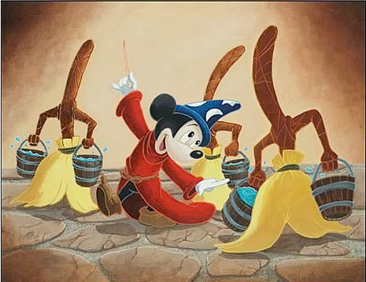
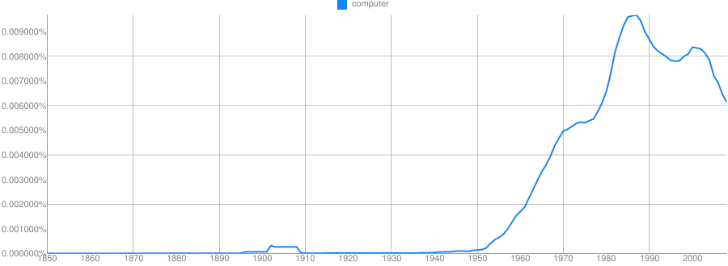
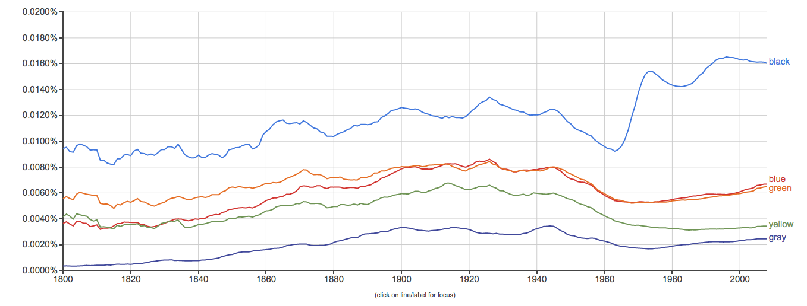
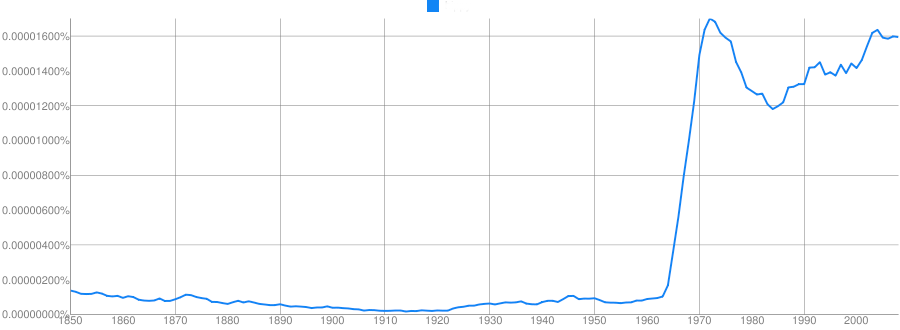
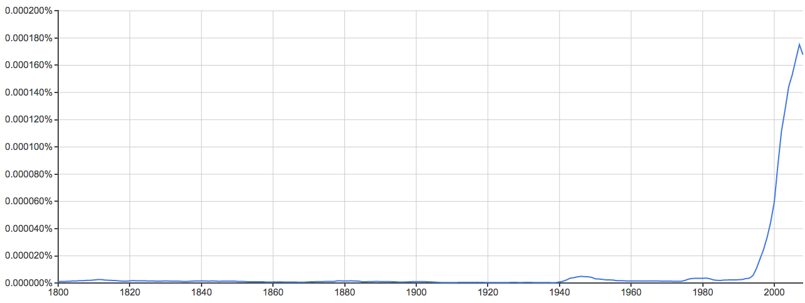
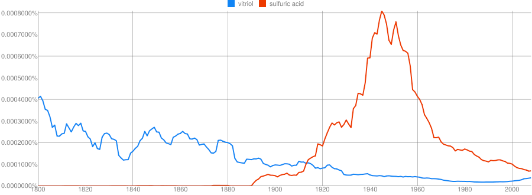
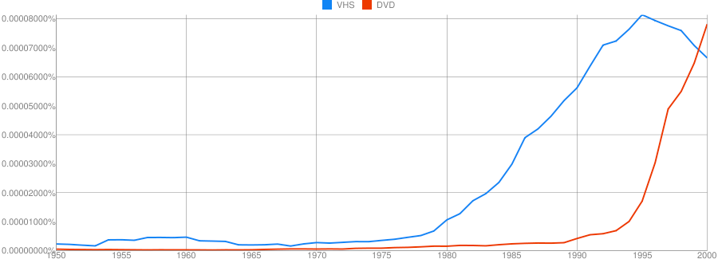
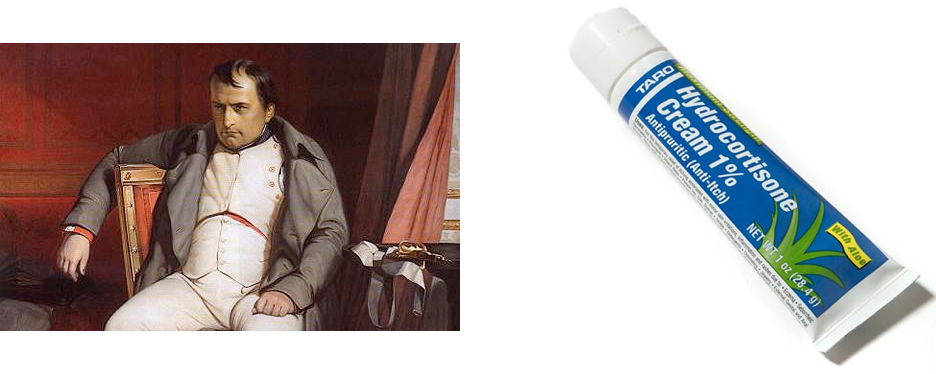

<img width="100%" src="img/vagueness.jpg"> ---  # Making Words Work For You ### Will Styler - World of Words --- ## There's a *lot* of language data out there. *<!-- .element: class="fragment" --> 1.3 billion active websites <small>(<a href="http://www.internetlivestats.com/total-number-of-websites/">Source</a>)</small> *<!-- .element: class="fragment" --> Mayo Clinic enters 298 million patient records per year <small>(<a href="http://www.mayoclinic.org/emr/">Source</a>)</small> *<!-- .element: class="fragment" --> 500 million Tweets per day <small>(<a href="http://www.internetlivestats.com/twitter-statistics/">Source</a>)</small> *<!-- .element: class="fragment" --> 294 billion emails sent daily <small>(<a href="http://email.about.com/od/emailtrivia/f/emails_per_day.htm">Source</a>)</small> <!-- .element: class="fragment" --> ... and that's just the digital stuff --- # That's a LOT of words --- ## Today we're going to talk about putting those words to work - Part 1: Counting Words for Fun and Profit - Part 2: Natural Language Processing is really useful - Part 3: Natural Language Processing is *really* hard --- # Part 1 ## Counting Words for Fun and Profit --- ### Words are used differently in different situations - ... and we as Linguists want to know about that --- > “... by using these existing standards, we hope to be able to leverage new technologies during processing.” --- ### A Question: - Was Will really talking like a corporate drone when he used “leverage” as a verb, or do lots of people do that outside the boardroom? - For that matter, how is “leverage” usually used? --- ### How can we answer this? - Make linguists go through huge amounts of text, counting words and finding patterns --- ## The Problem: Humans are inefficient and expensive. <!-- .element: class="fragment" --> --- <img class="big" src=img/feast.jpg> --- <img class="big" src=img/house.jpg> --- <img src="img/hal9000.jpg"> ## The Solution --- ## Let's search some corpora! --- ### **Corpus (pl. Corpora)**: A collection of written or spoken texts assembled for the purpose of studying language --- ### There are many different corpora out there. --- ## The Brown Corpus ~2,000,000 words of English fiction, books, humor, textbooks, reporting, and gov’t docs --- ## The Callhome Corpus Transcripts of 120 phone conversations (18.3 hours of speech) --- ## The Switchboard Corpus 2430 conversations (~3,000,000 words of text) from phone calls --- ## The Broadcast News Corpus ~1,243,526 words transcribed from various broadcast news sources --- ## The EnronSent Corpus 96,106 email messages (~13,000,000 words) from the Enron Corporate Email Servers --- ## The Google Books Corpus All the text from every book in the “Google Books” service --- ## The Google Corpus The entire internet. At your fingertips --- ## The Lena Corpus Thousands of hours of recorded child and child- directed speech --- ## The Penn Treebank A large corpus of syntactically marked data (showing the tree structure of sentences) --- ## The Callhome Speech Corpus This corpus actually contains sound files, useful for speech geeks like myself --- ### (and many, many, *many* more) --- ### So, that’s a bunch of data. How do you actually ask your question? --- ## How to run a corpus search: - 1) Figure out where you want to look (which corpora) - 2) Figure out exactly what you want to search for - 3) Find where and when it occurs - 4) Sift through the results --- ## So, to find out if leveraging is corporate-speak, I want to look... - 1) Someplace businessy (EnronSent) - 2) Someplace not businessy (CallHome) - **Hypothesis: 'Leverage' will occur more often in business-related corpora** --- ## What would I need to look for? - leverage? - leveraged? - leverages - leveraging --- ## How would I ask the computer to find that? - Get your geek on by logging into a corpus server - “Find any lines in which EITHER “leverages” OR “leveraging” occurs `egrep "leverages|leveraging" yourcorpus` - (This all looks complicated, but it gets easier quickly, and there’s usually someone around to help.) --- ## This gives you numbers! - Callhome Corpus: 0 Results - EnronSent Corpus: 61 results - By doing statistical analysis on your searches, you can measure whether the data really shows what you claim it does - And move beyond opinion --- > "Leverage was used as a verb 61 times in the Enron corpus, and none at all in the equally large callhome corpus." ### Case Closed. Booyeah. --- Counting word frequency is a very powerful tool! --- # n-Grams --- ### What is an n-gram? - An n-gram is a sequence of words from a sample of text or speech - 1 word is a 'unigram', 2 is a 'bigram', 3 is a 'trigram'... - Counting words is relatively inexpensive - Especially relative to syntactic parsing, etc... --- ### We just did a unigram search - "How often does word X occur alone in corpus Y?" - These can be very powerful with many corpora - <em>What if we could search through history with a corpus search to see how words are used over time?</em> --- ## Enter Google Ngrams <a href=https://books.google.com/ngrams>https://books.google.com/ngrams</a> --- <img width="1024" src="img/eat.png"> ### Eat --- <img width="1024" src="img/sleep.png"> ### Sleep --- <img width="1024" src="img/walk.png"> ### Walk --- <img width="1024" src="img/eatsleepwalk.png"> ### Eat/Sleep/Walk --- ### Some words, you might expect to change over time --- <img width="1024" src="img/automobile.png"> ### Automobile ---  ### Computer --- <img width="1024" src="img/laptop.png"> ### Laptop --- <img width="1024" src="img/download.png"> ### Download --- <img width="1024" src="img/google.png"> ### Google --- <img width="1024" src="img/confederacy.png"> ### Confederacy --- ### Some words are falling out of use --- <img width="1024" src="img/bilious.png"> ### Bilious --- <img width="1024" src="img/blackguard.png"> ### Blackguard --- <img width="1024" src="img/ngram_retarded.png"> ### Retarded --- ### Society is represented in distributions --- <img width="1024" src="img/nazi.png"> ### Nazi --- <img width="1024" src="img/war.png"> ### War ---  ### Color Terms --- <img width="1024" src="img/sex.png"> ### Sex --- ### Let's play a game! --- Clue: Type of person (belonging to a certain group or culture)  - Hippy --- Clue: Country <img width="1024" src="img/ussrhidden.png"> - USSR --- Clue: Home/Office Technology <img width="1024" src="img/typewriterhidden.png"> - Typewriter --- Clue: Military Technology <img width="1024" src="img/ngram_atomicbombhidden.png"> - Atomic Bomb --- Clue: Transportation Technology <img width="1024" src="img/ngram_rocket.png"> - Rocket --- Clue: Food Product  - Spam --- ### Warring Words ---  ### Vitriol vs. Sulfuric Acid --- <img width="1024" src="img/aeroplane.png"> ### Aeroplane vs. Airplane ---  ### VHS vs. DVD --- <img width="1024" src="img/handicapped.png"> ### Handicapped vs. Disabled --- <img width="1024" src="img/flammable.png"> ### Flammable vs. Inflammable <img width="200" src="img/whorf.png"> --- ### Unigrams are interesting! - ... and they can give us lots of good information - <strong>But bigrams and trigrams give much more interesting information about language</strong> --- ### Why? - Counting how often word pairs occur together in a corpus gives us more than just counts - <strong>"What is the probability of word X following word Y?"</strong> --- ### These Probabilities tell us about language - "You are" is more likely than "You is" - "Two princesses" is more likely than "Two princess" - "Would have" is more likely than "Would did" - "By and" is, by and large, followed by "large" - **n-grams provide a very simple *language model* which we can do inference from** --- ### These probabilities tell us about the world - We all have probability models for language - "Let's go _______" - "Take a ______" - "______ pizza" - "Chinese food" or "Chinese manufacturing" are often discussed - But "Chinese snow" or "Chinese Ceiling" not so much - **Probable pairings tell us something about how the world works** --- ### n-grams are *really* useful - Provide some grammatical information - "What word forms regularly occur together?" - Provide some real-world information - "What are people most commonly talking about?" - Inexpensive to generate --- ### n-gram uses in the real world - Typo detection - "I made a bog mistake" - "She got lost in a peat big" - Speech recognition - "I need a walk for exercise" - "I need a wok for stir fry" - Sentiment analysis - How often do "Toyota" and "sucks" co-occur relative to "Nissan" and "Sucks"? --- ### Sociolinguistic n-gramming - "How often is word X used to describe black athletes vs. white athletes?" - "Is Unigram frequency of these words predicted by subject race?" - Words like "Aggressive", "Angry", "Unstoppable" and "Ferocious" are preferentially applied to black athletes - Work is ongoing - c.f Wright 2017, The Reflection and Reification of Racialized Language in Popular Media --- ## ... and all of this from counting words! - But we can go deeper! --- # Part 2 ## Natural language processing is really useful --- ## NLP - Natural Language Processing Teaching computers to “understand” human language - NLP often uses more sophisticated techniques and language models to describe corpora - n-grams are a starting point, but now we'll go beyond --- ## Machine Learning in ∞ easy steps: - 1) Get a corpus of data and annotate it to tell the computer what’s going on in one specific domain - 2) “Train” the computer by letting it analyze that corpus using a number of tools - 3) Give it a different corpus, have it try to guess what’s going on and answer questions - 4) Refine the programming, then get another corpus and annotate it to tell the computer what’s going on.. - (Repeat) --- ## What kinds of tools are used? --- ### Tokenizer Breaks sentences into individual words - (breaks,sentences,into,individual,words) --- ### Part of Speech Taggers Labels words with their grammatical functions - Labels|VBZ, words|NNS, with|IN, their|PRP$, grammatical|JJ, functions|NNS --- ### Syntactic Parser This turns sentences into syntactic representations for analysis. ~~~~(ROOT (S (NP (DT This)) (VP (VBZ turns) (NP (NNS sentences)) (PP (IN into) (NP (NP (JJ syntactic) (NNS representations)) (PP (IN for) (NP (NN analysis)))))) (. .)))~~~~ --- ### Semantic Frame Annotations "John boldly threw the stick at the polar bear." - Thrower: John - Object Thrown: Stick - Target: Polar Bear - Manner: Boldly --- ### Coreference/Anaphora "John boldly threw the stick at the polar bear. The beast cast it aside then enjoyed a snack." - "John[1] boldly threw the stick[2] at the polar bear[3]. The beast[3] cast it[2] aside then enjoyed a snack[1]." --- ### (and many, many more) --- ## This kind of nuanced NLP is very, very useful --- ### Analyzing Speech Data "Ask people why they're calling, and connect them to the right department based on their answer." <!-- .element: class="fragment" --> "Flag all tech support conversations where the customer mentions a competitor" <!-- .element: class="fragment" --> "Redirect all angry-sounding customers to higher-tier support workers" (Speech emotion detection) <!-- .element: class="fragment" --> "Are the two people in this skype call flirting, arguing, expressing love, or sadness? Target post-session ads accordingly." <!-- .element: class="fragment" --> "I want to talk to... billing?" (Uncertainty analysis) <!-- .element: class="fragment" --> "Yeah, I really like going to Applebees." (Spot-the-sarcasm) <!-- .element: class="fragment" --> --- ### Data Aggregation “Watch Twitter and give me the locations of wildfires, floods, etc, and provide information about damage, shelters and resources in an easy-to-read format” (EPIC) <!-- .element: class="fragment" --> “Read every news article about the Ukrainian Revolution and present the information on a cohesive timeline, with sources labeled.” (RED) <!-- .element: class="fragment" --> “Collect all case-law involving reverse mortgages in the state of Florida in which the plaintiff's children filed suit against the mortgage company” <!-- .element: class="fragment" --> --- ### Authorship attribution and stylistic analysis “Examine these two written passages/books and tell me whether they were both written by the same person” (Authorship Attribution Analysis) <!-- .element: class="fragment" --> "Examine these negative reviews and tell me what demographic the authors likely represent based on the language used." <!-- .element: class="fragment" --> "Are these critical forum posts all written by the same person?" <!-- .element: class="fragment" --> --- ### Predictive analysis of text “Look for any information in the newswire which will predict a change in this company's stock price, then buy or sell stock automatically.” <!-- .element: class="fragment" --> “Based on this person's Facebook post history, how likely is he to click an ad for weight-loss pills?” <!-- .element: class="fragment" --> "Based on all the political posts and tweets in Saginaw compared to those in Ann Arbor, how likely is this senator to lose in a recall election?" <!-- .element: class="fragment" --> - “Given this large sample of a child’s speech, is the child likely to be autistic?” (Current research at the LENA foundation in Boulder) --- ### Sentiment Analysis “How often, in this corpus of blogs, do people say nice or awful things about product X?” <!-- .element: class="fragment" --> "We've just leaked a picture of our next supercar. How do people on twitter like the design?" <!-- .element: class="fragment" --> "What are people saying about our leaked $199.99 pricepoint?" <!-- .element: class="fragment" --> "How do people on these forums feel about 9/11?" <!-- .element: class="fragment" --> - "This guy talks about guns a lot on Facebook. Should we show him ads for firearms, or ads for gun-control organizations?" --- ### Language Pattern Detection - "Is this an inflammatory, hateful, angry, or trollish comment?" (YouTube) - "Scan online forums for anything which looks like a threat against the President" (The US Secret Service) - “Watch these websites being used by radical groups and look for specific language usage patterns that predict violent behavior.” (All sorts of defense department grants) - “Read every email, looking for threats or discussion of terrorist attacks on American soil.” --- <img class="big" src="img/NSA.jpeg"> --- ... or my personal favorite NLP task... --- ## Temporal Analysis and Event Discovery --- ### A Case Study Many hospitals around the country are switching to Electronic Medical Records (EMRs). <!-- .element: class="fragment" --> These records are easily available within the institution, and contain lots of valuable data. <!-- .element: class="fragment" --> Creating timelines is incredibly time-consuming for humans, as is comparison. <!-- .element: class="fragment" --> What if machines could do this for us? <!-- .element: class="fragment" --> [The THYME Project](https://clear.colorado.edu/TemporalWiki/index.php/Main_Page) <!-- .element: class="fragment" --> --- ### “The patient developed a mild post-surgical rash, which was treated with hydrocortisone at the follow-up” - Sequence of events: - 1) Surgery - 2) Mild rash - 3) Hydrocortisone, Followup (overlapping) - 4) No more rash --- ### If a computer can be taught to interpret time in medical records, we can ask... - "I have 30 seconds to learn this patient's history. Go." - “How often do patients have heart attacks within 2 years of starting Vioxx?” - “How many people who have a facelift develop persistent facial numbness?” - “How long do patients usually live following diagnosis of Glioblastoma?” - "Is there a correlation between the administration of vaccines and the development of autism?” - **[(No, damnit.)](http://www.webmd.com/brain/autism/news/20110105/bmj-wakefield-autism-faq?print=true)** --- ### Temporal reasoning is important Humans interpret time naturally, and make reference to it often. <!-- .element: class="fragment" --> Temporality interacts with causality in interesting ways. <!-- .element: class="fragment" --> Event detection and reasoning is useful in a variety of domains. <!-- .element: class="fragment" --> "What happened" is a very fundamental question that everybody wants answered. <!-- .element: class="fragment" --> - So the sooner computers can do it, the better! --- ## NLP can be used to address answer any questions humans can answer! --- <img width="1024" src="img/terminator.png"> --- ### ... not so fast --- # Part 3 ## Why natural language processing is really hard. --- <img width="100%" src="img/temptation.jpg"> --- # No. <img width="50%" src="img/hal9000.jpg"> ### Not yours. <!-- .element: class="fragment" --> --- ## Natural Language is difficult at every level <!-- .element: class="fragment" --> --- ## Speech <img class="big" src="img/magic.jpg"> --- ### No two people sound alike, even saying the same things --- ### The right answer depends on the context and prosody. --- "Bring me the bat, man" <img class="big" src="naturallanguagedataimg/dugout.jpg"> --- "Bring me the Batman" --- ### Speech recognition is spectacularly good, but nowhere near good enough. --- ## Modality Did something happen? Is it real? --- ### Modality is difficult "The compound might be bombed" <!-- .element: class="fragment" --> "If they attack, we'll bomb the compound." <!-- .element: class="fragment" --> “The general stated that bombing the compound overnight “was still an option”” <!-- .element: class="fragment" --> “We may conduct a bombing at 0300” <!-- .element: class="fragment" --> “We will conduct a bombing at 0300” <!-- .element: class="fragment" --> “We conducted a bombing at 0300” <!-- .element: class="fragment" --> --- ### Coreference is difficult - "The tour group stopped by the Church's annex to grab the group leader's umbrella. They left their building once he had it. " “The Bay Harbor Butcher is off the streets, as Dexter Morgan, the alleged killer, was arrested by police over the weekend” <!-- .element: class="fragment" --> ““Bill Clinton was the President of the United States in 1999. Now Barack Obama is POTUS.” <!-- .element: class="fragment" --> --- ## Metonymy Using a word to refer to a practically or metaphorically related concept --- ### Metonymy is difficult "The terrorist built a **pipe bomb**" "The __pipe bomb__ interrupted the festival" <!-- .element: class="fragment" --> "**200mg of Loperamide** stopped her diarrhea" <!-- .element: class="fragment" --> "**Moscow** condemned the latest round of sanctions" <!-- .element: class="fragment" --> --- ## Causality Did one event trigger or cause the next event? --- ### Causality is difficult “The dam burst when the rockslide hit it.” <!-- .element: class="fragment" --> “The over-full dam burst when the rockslide hit it.” <!-- .element: class="fragment" --> “She pulled the trigger, firing the gun and killing the man.” <!-- .element: class="fragment" --> “She pulled the trigger, releasing the hammer, igniting the powder charge, launching the bullet and killing the man.” <!-- .element: class="fragment" --> --- ## Temporal Expressions Words or phrases that indicate position in time --- ### Temporal Expressions can be difficult “The bombing occurred 2/13/12 at 0214” <!-- .element: class="fragment" --> “Next Tuesday, she’ll come in for a follow-up” <!-- .element: class="fragment" --> “She’s been having trouble sleeping lately.” <!-- .element: class="fragment" --> “She should expect soreness postoperatively.” <!-- .element: class="fragment" --> “TSA regulations have grown increasingly restrictive Post-9/11” <!-- .element: class="fragment" --> --- ## Temporal Relations Linking and arranging different events as part of a greater timeline --- ### “The patient developed a mild rash after surgery, which was treated at her follow up visit with hydrocortisone” --- ### “The patient developed a mild rash after surgery, which was treated at her follow up visit with hydrocortisone, many years after Napoleon's exile to Elba.”  <!-- .element: class="fragment" --> --- ### Every event in the history of the universe is temporally related to every other event in this history of the universe. NumRelations = (NumEvents)*(NumEvents) <!-- .element: class="fragment" --> 100 Events == 10,000 valid Temporal Relations <!-- .element: class="fragment" --> --- ### Yikes. --- ### ... and language users hate us "Gold covered the miner's hands"/"Gold paid for the miner's education" <!-- .element: class="fragment" --> <!-- .element: class="fragment" --> “The Queen of England’s hat was purple” <!-- .element: class="fragment" --> “We gave the monkeys the bananas because they were ripe” <!-- .element: class="fragment" --> “We gave the monkeys the bananas because they were hungry” <!-- .element: class="fragment" --> “Time flies like an arrow, fruit flies like a banana” <!-- .element: class="fragment" --> “The old man returned to his house was happy” --- <img width="1024" src="img/terminator.png"> --- # Not yet. --- <img width="900" src="img/morpheus.png"> ## Hooray! --- # Final Conclusion - 1) You can get a lot of great information just by counting words - 2) More complex analysis gets you even more information - 3) ... but doing that is really, really, REALLY difficult --- ### This presentation is available online at: <a href="http://savethevowels.org/talks/ngrams_nlp_2018.html">http://savethevowels.org/talks/ngrams_nlp_2018.html</a> --- ### Thank you! ---